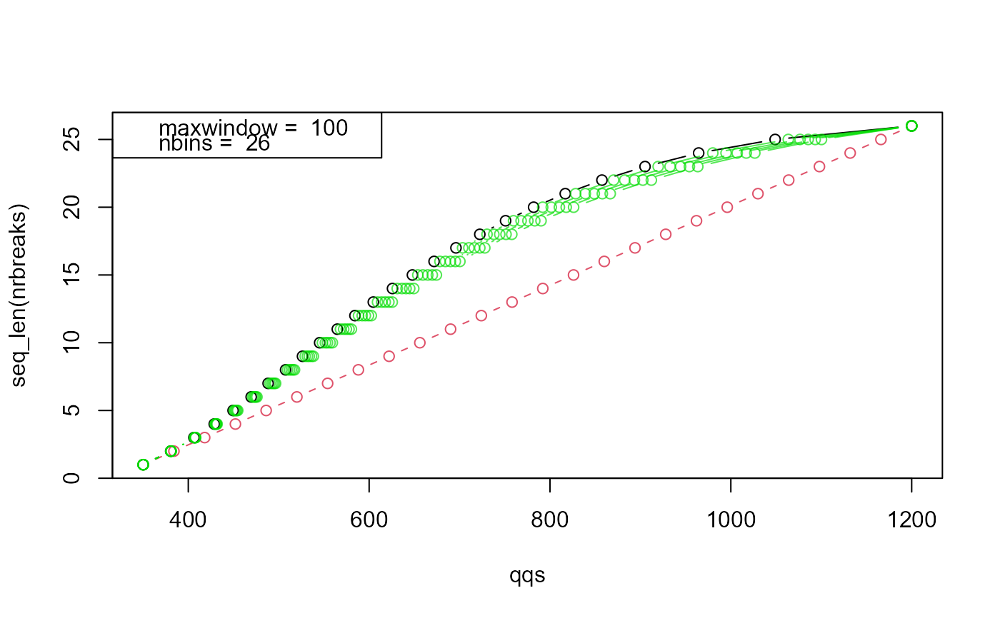

initialize
create equidistant breaks
quantile breaks
sampling breaks
barplot showing the number of precursors per window
Table with window boundaries and statistics
summary of the binning process (see objectiveMS1Function for more details)
moves window start and end to region with as few as possible precursor masses
shows the generated DIA cycle
Arguments
| list | of masses |
|---|---|
| nbins | number of bins default 25 |
| maxwindow | largest window size |
| minwindow | smallest window size |
| digits | mass precision default 2 |
| digigits | mass precision |
| max | number of bins |
| plot | default TRUE |
| overlap | size of window overlap default 1 m/z |
Value
array of masses
array with masses
array with masses
data.frame with columns: - from (window start) - to (window end) - mid (window centre), width (window width) - counts expected number of precursors
list with optimization scores
data.frame with optimized windows
Fields
massesMS1 masses
breaksthe breaks
nbinsnumber of bins
digitsmass accuracy in result
Methods
asTable(overlap = 1)make windows
error()show error
optimizeWindows(digits = 1, maxbin = 15, plot = FALSE, overlap = 0)optimizes the windows
quantile_breaks(digits = 2)same number of MS1 in each window but might violate hard constraints
sampling_breaks(maxwindow = 150, minwindow = 5, digits = 2, plot = FALSE)starts with quantile breaks but mixes with uniform data to satisfy had constraints
Examples
data(masses) cdsw <- Cdsw(masses) tmp <- cdsw$sampling_breaks(maxwindow=100,plot=TRUE)  cdsw$plot()cdsw$asTable() #> from to mid width counts #> 0% 349.63 381.69 365.660 32.06 6098 #> 4% 380.69 408.69 394.690 28.00 6428 #> 8% 407.69 432.39 420.040 24.70 6553 #> 12% 431.39 455.19 443.290 23.80 6612 #> 16% 454.19 476.44 465.315 22.25 6622 #> 20% 475.44 497.08 486.260 21.64 6678 #> 24% 496.08 517.97 507.025 21.89 6752 #> 28% 516.97 538.78 527.875 21.81 6717 #> 32% 537.78 559.80 548.790 22.02 6701 #> 36% 558.80 580.86 569.830 22.06 6662 #> 40% 579.86 602.86 591.360 23.00 6679 #> 44% 601.86 626.05 613.955 24.19 6640 #> 48% 625.05 649.83 637.440 24.78 6539 #> 52% 648.83 674.86 661.845 26.03 6405 #> 56% 673.86 700.87 687.365 27.01 6405 #> 60% 699.87 728.40 714.135 28.53 6295 #> 64% 727.40 758.26 742.830 30.86 6150 #> 68% 757.26 790.59 773.925 33.33 6136 #> 72% 789.59 826.63 808.110 37.04 5997 #> 76% 825.63 867.13 846.380 41.50 5802 #> 80% 866.13 912.57 889.350 46.44 5481 #> 84% 911.57 963.95 937.760 52.38 5115 #> 88% 962.95 1027.00 994.975 64.05 4654 #> 92% 1026.00 1100.73 1063.365 74.73 4121 #> 96% 1099.73 1200.48 1150.105 100.75 3121 cdsw$breaks #> 0% 4% 8% 12% 16% 20% 24% 28% 32% 36% #> 350.13 381.19 408.19 431.89 454.69 475.94 496.58 517.47 538.28 559.30 #> 40% 44% 48% 52% 56% 60% 64% 68% 72% 76% #> 580.36 602.36 625.55 649.33 674.36 700.37 727.90 757.76 790.09 826.13 #> 80% 84% 88% 92% 96% 100% #> 866.63 912.07 963.45 1026.50 1100.23 1199.98 cdsw$optimizeWindows() #> from to mid width counts #> 1 350.13 381.35 365.74 31.22 6053 #> 2 381.05 408.35 394.70 27.30 6304 #> 3 408.15 431.95 420.05 23.80 6319 #> 4 431.85 454.85 443.35 23.00 6449 #> 5 454.65 476.05 465.35 21.40 6362 #> 6 475.85 496.85 486.35 21.00 6526 #> 7 496.45 517.85 507.15 21.40 6587 #> 8 517.45 538.45 527.95 21.00 6492 #> 9 538.15 559.45 548.80 21.30 6508 #> 10 559.15 580.45 569.80 21.30 6448 #> 11 580.15 602.45 591.30 22.30 6526 #> 12 602.15 626.05 614.10 23.90 6604 #> 13 625.45 649.45 637.45 24.00 6338 #> 14 649.25 674.45 661.85 25.20 6248 #> 15 674.25 700.45 687.35 26.20 6277 #> 16 700.25 728.15 714.20 27.90 6163 #> 17 727.75 758.15 742.95 30.40 6117 #> 18 757.75 790.15 773.95 32.40 5970 #> 19 789.65 826.15 807.90 36.50 5928 #> 20 825.65 866.65 846.15 41.00 5733 #> 21 866.55 912.15 889.35 45.60 5353 #> 22 912.05 963.55 937.80 51.50 5057 #> 23 963.35 1026.65 995.00 63.30 4612 #> 24 1026.45 1100.25 1063.35 73.80 4081 #> 25 1100.15 1200.05 1150.10 99.90 3101 cdsw$showCycle()